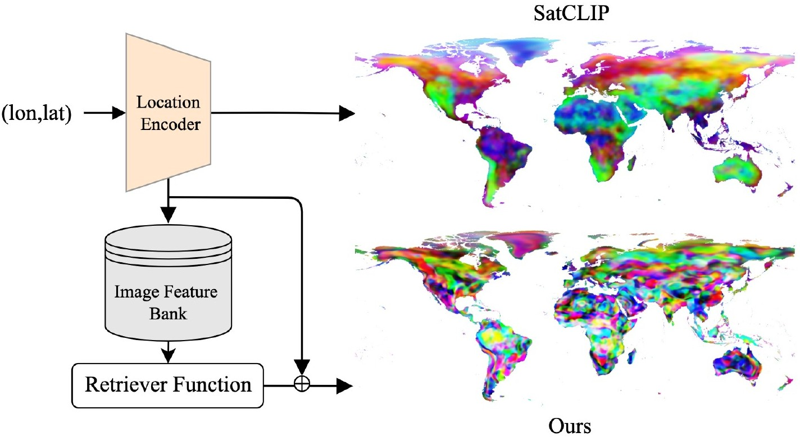
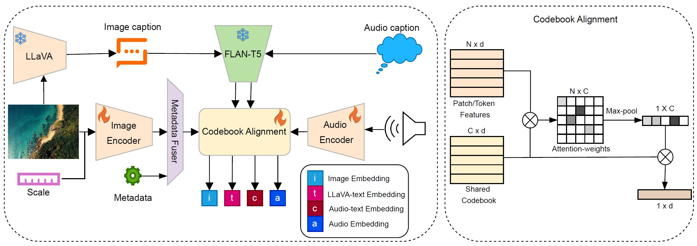

About
I am currently working as an Assistant Professor at the Institute of Geography, University of the Punjab, Lahore, where I founded and lead the GeoScape Analytics Lab (GSAL), a research group working on remote sensing, GIS and GeoAI for open, public-good geospatial science in Pakistan.
Previously, I worked as a Taylor Geospatial Institute (TGI) Postdoctoral Fellow in Computer Science at Washington University in St. Louis, where I was part of the Multimodal Vision Research Laboratory led by Dr. Nathan Jacobs.
I hold a Ph.D. in Geomatics from the University of the Punjab, where I worked with Dr. Sajid Rashid Ahmad and Dr. Hammad Gilani, focusing on forest mapping using geospatial data and techniques.
Research
My research focuses on geospatial science, with a strong emphasis on GIS and satellite remote sensing for addressing environmental and urban challenges. I work on satellite image analysis, land cover change detection, and spatial modeling, using GeoAI and multi-source Earth observation data to study landscape dynamics and support spatial decision-making. Increasingly, I integrate machine learning and cloud-based geospatial analytics to scale these efforts, enabling applications in forestry, climate resilience, sustainable resource management, and data-driven urban planning.
News
All news →- 21 Apr 2026Invited Talk on "From Satellites to Solutions" · IEEE GRSS Lahore Chapter and Remote Sensing & Spatial Analytics Lab, Information Technology University, Lahore, Pakistan
- 2026Sat2Sound: A Unified Framework for Zero-Shot Soundscape Mapping · Conference on Computer Vision and Pattern Recognition - Workshop (CVPR-W)
- 2026GRIPS: Geospatial Research Index of Pakistan Studies · Software, v1.0.0, 2026 · DOI: 10.5281/zenodo.22807356 · MIT License
- 2026GeoDROP: Geospatial Datasets Repository of Pakistan · Open data platform, 2026
- 10 Dec 2025Invited Talk on "GeoAI for A Changing Planet" · School of Interdisciplinary Engineering & Sciences (SINES), National University of Sciences and Technology (NUST), Islamabad, Pakistan
Research areas
01
Forest structure & carbon
Canopy height, aboveground biomass and forest fragmentation from spaceborne LiDAR and optical imagery.
02
Geospatial AI
Multimodal embeddings and benchmarks that link satellite imagery with text, sound and species observations.
03
Land, soil & hazards
National-scale soil erosion, land degradation and landslide susceptibility mapping for Pakistan.
Selected publications
Full publication list (52) →

Conference paper · 2025
RANGE: Retrieval Augmented Neural Fields for Multi-Resolution Geo-Embeddings
